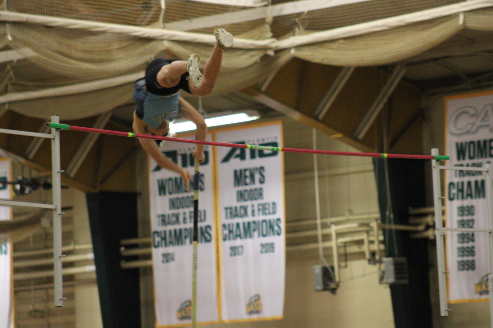
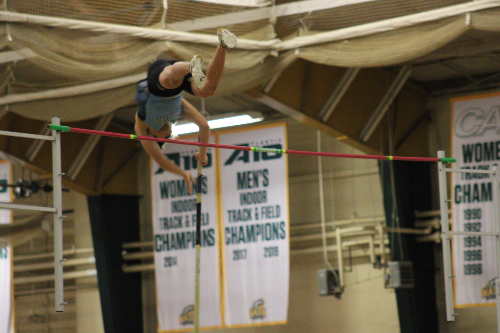
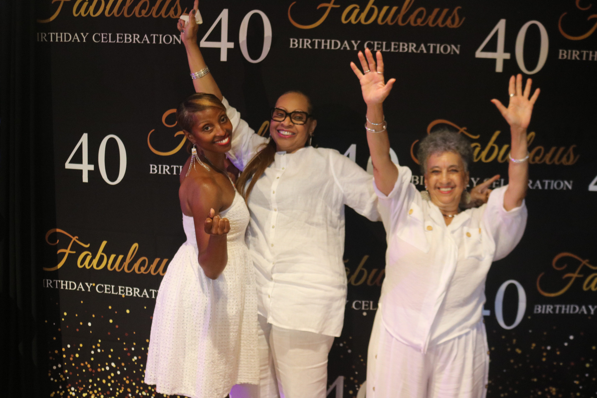
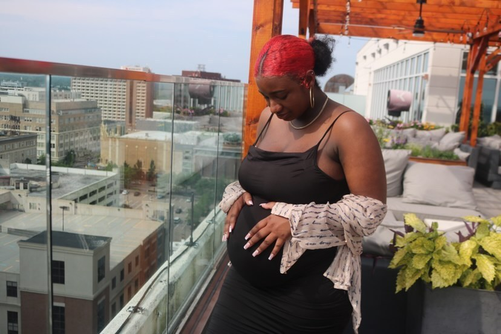

Say Cheese
this is a list of things that come with a shoot:
- Attention to detail
- 1 photo edited from the shoot
- 3 Photos Edited from the shoot
 

You can book me for any Occassion:
- Holiday Family Pictures 
- Graduation
- Materenity Shoots 

Steady hand Luke has become increasingly more skilled to capture the moments of yesterday for today. Hopefully this website can be developed to make easier for people to book. Sessions Want to capture highlights from your ssporting? Need graduation pictures? Want a music video?
We will examine the space of the web at large and explore and challenge what a website is and can be with the hopes of reclaiming an important creative space.